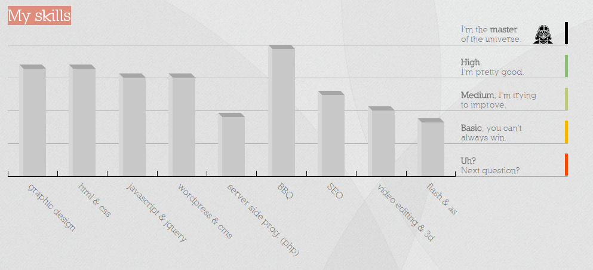

¿Quien es ese tal elvis?
No me considero ni programador ni diseñador, mas bien un hacedor...un hacker del sistema
no me gusta presumir pero....
...asi comienzan muchas biografias por ahi, y luego dicen un monton de cosas que sabra Dios si son ciertas o no.
Yo al contrario solo te dire cosas que deberdad importan!
posdata: Tienes algun proyecto creativo? quiero crear algo extraordinario para ti! -trabajemos juntos-
 Yo!
Yo!

7 cosas que necesias saber sobre mi
- Estuido para Jedi con el Maestro Yoda
- Amo los domplines ahogados en queso
- Quisiera pasar todo el dia mirando las estrellas
- Quiero ser un super mutante Soy batman!
- Soy Chuck norris!
- Me encanta la musica
- Soy un exelente bailarin cuando duermo
Soy ironman!